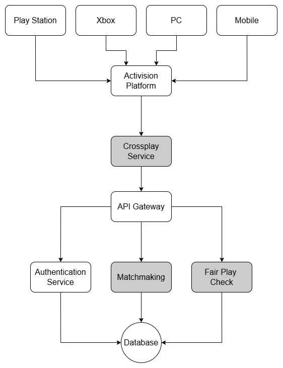

<!DOCTYPE html>
<html lang="en">
  <head>
    <meta charset="UTF-8" />
    <meta name="viewport" content="width=device-width, initial-scale=1.0" />
    <link rel="stylesheet" href="assets/css/styles.css" />
    <!-- =====BOX ICONS===== -->
    <link
      href="https://cdn.jsdelivr.net/npm/boxicons@2.0.5/css/boxicons.min.css"
      rel="stylesheet"
    />
    <title>Business Case Details - Sai's Portfolio</title>
  </head>
  <body>
    <!--===== HEADER =====-->
    <header class="l-header">
      <nav class="nav bd-grid">
        <div>
          <a href="index.html" class="nav__logo">Sai Satya B V</a>
        </div>
        <div class="nav__menu">
          <ul class="nav__list">
            <li class="nav__item">
              <a href="index.html#home" class="nav__link">Home</a>
            </li>
            <li class="nav__item">
              <a href="index.html#business-cases" class="nav__link">Back to Cases</a>
            </li>
          </ul>
        </div>
      </nav>
    </header>

    <main class="l-main">
      <!--===== CASE DETAILS =====-->
      <section class="case-details section" id="case-details">
        <h2 class="section-title">Business Case: Activision Crossplay in All Games</h2>
        <div class="case-details__container bd-grid">
          <div class="case-details__img">
            
          </div>
          <div>
            <h3 class="case-details__subtitle">Overview</h3>
            <p class="case-details__text">
              Activision aims to enable seamless crossplay in all games, allowing players on different platforms (e.g., Xbox, PlayStation, PC) to play together. The challenge lies in addressing gameplay balance issues (e.g., input differences), cheating disparities (e.g., PC cheaters affecting console players), and community fragmentation (e.g., longer matchmaking times when crossplay is disabled), which have prevented universal crossplay adoption.
            </p>
            <h3 class="case-details__subtitle">Proposed Solution</h3>
            <p class="case-details__text">
              To tackle these crossplay challenges, Activision can implement the Hungarian Algorithm for input-based matchmaking, Bloom Filter for cheat detection, Disjoint-Set Union (DSU) for community clustering, and Greedy Matching for optimized matchmaking. Below is a detailed breakdown of each technique.
            </p>

            <h4 class="case-details__subsubtitle">Hungarian Algorithm</h4>
            <p class="case-details__text">
              <strong>Description:</strong> The Hungarian Algorithm solves the assignment problem by finding the optimal pairing of players based on input types (e.g., controller vs. mouse/keyboard) to minimize gameplay imbalance.<br>
              <strong>Advantages:</strong> Ensures fair matchmaking by pairing players with similar input methods; optimal assignment in polynomial time.<br>
              <strong>Disadvantages:</strong> Assumes a static cost matrix; may not scale well for very large player pools.<br>
              <strong>Time Complexity:</strong> O(n³) where n is the number of players in the matchmaking pool.<br>
              <strong>Space Complexity:</strong> O(n²) for the cost matrix.<br>
              <strong>Code Implementation (C++):</strong><br>
              Below is a simplified Hungarian Algorithm implementation for input-based matchmaking.
            </p>
            <pre class="case-details__code">
#include <vector>
#include <climits>

class Hungarian {
private:
    std::vector<std::vector<int>> costMatrix;
    int n;
public:
    Hungarian(const std::vector<std::vector<int>>& costs) : costMatrix(costs), n(costs.size()) {}
    std::vector<int> solve() {
        std::vector<int> assignment(n, -1);
        std::vector<int> rowMin(n, INT_MAX), colMin(n, INT_MAX);
        for (int i = 0; i < n; i++) for (int j = 0; j < n; j++) rowMin[i] = std::min(rowMin[i], costMatrix[i][j]);
        for (int i = 0; i < n; i++) for (int j = 0; j < n; j++) costMatrix[i][j] -= rowMin[i];
        for (int j = 0; j < n; j++) for (int i = 0; i < n; i++) colMin[j] = std::min(colMin[j], costMatrix[i][j]);
        for (int j = 0; j < n; j++) for (int i = 0; i < n; i++) costMatrix[i][j] -= colMin[j];
        std::vector<bool> rowCovered(n, false), colCovered(n, false);
        for (int i = 0; i < n; i++) for (int j = 0; j < n; j++) {
            if (costMatrix[i][j] == 0 && !rowCovered[i] && !colCovered[j]) {
                assignment[i] = j;
                rowCovered[i] = colCovered[j] = true;
            }
        }
        return assignment;
    }
};

// Usage example:
int main() {
    // Cost matrix: Lower cost = better match (e.g., 0 for same input type)
    std::vector<std::vector<int>> costs = {{0, 10, 10}, {10, 0, 10}, {10, 10, 0}};
    Hungarian hungarian(costs);
    auto assignment = hungarian.solve(); // Pairs players for balanced teams
    return 0;
}
            </pre>

            <h4 class="case-details__subsubtitle">Bloom Filter</h4>
            <p class="case-details__text">
              <strong>Description:</strong> A Bloom Filter is a probabilistic data structure that efficiently checks if a player’s behavior (e.g., kill/death ratio, movement patterns) matches known cheating patterns, flagging potential cheaters.<br>
              <strong>Advantages:</strong> Fast and space-efficient; suitable for real-time cheat detection.<br>
              <strong>Disadvantages:</strong> May produce false positives; cannot confirm absence of cheating definitively.<br>
              <strong>Time Complexity:</strong> O(k) per lookup where k is the number of hash functions.<br>
              <strong>Space Complexity:</strong> O(m) where m is the size of the bit array.<br>
              <strong>Code Implementation (C++):</strong><br>
              Below is a Bloom Filter implementation for cheat detection.
            </p>
            <pre class="case-details__code">
#include <vector>
#include <functional>

class BloomFilter {
private:
    std::vector<bool> bits;
    int size, k;
    std::vector<std::function<size_t(const std::string&)>> hashFunctions;
public:
    BloomFilter(int m, int numHashes) : size(m), k(numHashes), bits(m, false) {
        hashFunctions.push_back([](const std::string& s) { return std::hash<std::string>{}(s); });
        hashFunctions.push_back([](const std::string& s) { return std::hash<std::string>{}(s + "salt1"); });
    }
    void add(const std::string& item) {
        for (int i = 0; i < k; i++) bits[hashFunctions[i](item) % size] = true;
    }
    bool mightContain(const std::string& item) {
        for (int i = 0; i < k; i++) if (!bits[hashFunctions[i](item) % size]) return false;
        return true;
    }
};

// Usage example:
int main() {
    BloomFilter bf(1000, 2);
    bf.add("cheat_pattern_1");
    bool isCheater = bf.mightContain("cheat_pattern_1"); // Returns true if potential cheater
    return 0;
}
            </pre>

            <h4 class="case-details__subsubtitle">Disjoint-Set Union (DSU)</h4>
            <p class="case-details__text">
              <strong>Description:</strong> DSU groups players into communities based on their platform preferences (e.g., those who enable/disable crossplay), ensuring players are matched within compatible groups.<br>
              <strong>Advantages:</strong> Efficiently manages player groups; reduces fragmentation.<br>
              <strong>Disadvantages:</strong> Assumes static preferences; may not handle dynamic changes well.<br>
              <strong>Time Complexity:</strong> O(α(n)) per operation where α(n) is the inverse Ackermann function (nearly constant).<br>
              <strong>Space Complexity:</strong> O(n) for the parent array.<br>
              <strong>Code Implementation (C++):</strong><br>
              Below is a DSU implementation for community clustering.
            </p>
            <pre class="case-details__code">
#include <vector>

class DSU {
private:
    std::vector<int> parent, rank;
public:
    DSU(int n) : parent(n), rank(n, 0) {
        for (int i = 0; i < n; i++) parent[i] = i;
    }
    int find(int x) {
        if (parent[x] != x) parent[x] = find(parent[x]);
        return parent[x];
    }
    void unite(int x, int y) {
        int px = find(x), py = find(y);
        if (px == py) return;
        if (rank[px] < rank[py]) parent[px] = py;
        else if (rank[px] > rank[py]) parent[py] = px;
        else { parent[py] = px; rank[px]++; }
    }
};

// Usage example:
int main() {
    DSU dsu(5);
    dsu.unite(0, 1); // Group players with similar preferences
    dsu.unite(2, 3);
    bool sameGroup = dsu.find(0) == dsu.find(1); // Check if in same community
    return 0;
}
            </pre>

            <h4 class="case-details__subsubtitle">Greedy Matching</h4>
            <p class="case-details__text">
              <strong>Description:</strong> Greedy Matching pairs players into games by prioritizing balanced teams over strict platform separation, optimizing for faster matchmaking.<br>
              <strong>Advantages:</strong> Reduces matchmaking times; prioritizes balance.<br>
              <strong>Disadvantages:</strong> May not always find the optimal solution; can lead to suboptimal pairings.<br>
              <strong>Time Complexity:</strong> O(n log n) for sorting and matching where n is the number of players.<br>
              <strong>Space Complexity:</strong> O(n) for storing player data.<br>
              <strong>Code Implementation (C++):</strong><br>
              Below is a Greedy Matching implementation for matchmaking.
            </p>
            <pre class="case-details__code">
#include <vector>
#include <algorithm>

class GreedyMatching {
public:
    std::vector<std::pair<int, int>> matchPlayers(std::vector<std::pair<int, int>>& players) {
        // players[i] = {skill, platform}
        std::sort(players.begin(), players.end()); // Sort by skill
        std::vector<std::pair<int, int>> matches;
        for (int i = 0; i < players.size() - 1; i += 2) {
            matches.push_back({i, i + 1});
        }
        return matches;
    }
};

// Usage example:
int main() {
    std::vector<std::pair<int, int>> players = {{100, 0}, {105, 1}, {200, 0}, {195, 1}};
    GreedyMatching gm;
    auto matches = gm.matchPlayers(players); // Pairs players for balanced games
    return 0;
}
            </pre>

            <h3 class="case-details__subtitle">Impact</h3>
            <p class="case-details__text">
              This solution addresses the core challenges of crossplay, making it feasible for Activision to implement across more games. The Hungarian Algorithm ensures fair gameplay by matching players with similar input types, Bloom Filter reduces cheating by flagging suspicious behavior, DSU minimizes community fragmentation by grouping compatible players, and Greedy Matching optimizes matchmaking for faster, balanced games. This enhances the crossplay experience, increases player satisfaction, and strengthens Activision’s reputation for inclusive multiplayer gaming.
            </p>
          </div>
        </div>
      </section>
    </main>

    <!--===== FOOTER =====-->
    <footer class="footer">
      <p class="footer__title">Sai Satya</p>
      <div class="footer__social">
        <a
          href="https://www.linkedin.com/in/sai-satya-49045426a/"
          target="_blank"
          class="footer__icon"
        >
          <i class="bx bxl-linkedin"></i>
        </a>
      </div>
      <p class="footer__copy">© Sai Satya. All rights reserved</p>
    </footer>

    <!--===== SCROLL REVEAL =====-->
    <script src="https://unpkg.com/scrollreveal"></script>
    <!--===== MAIN JS =====-->
    <script src="assets/js/main.js"></script>
  </body>
</html>